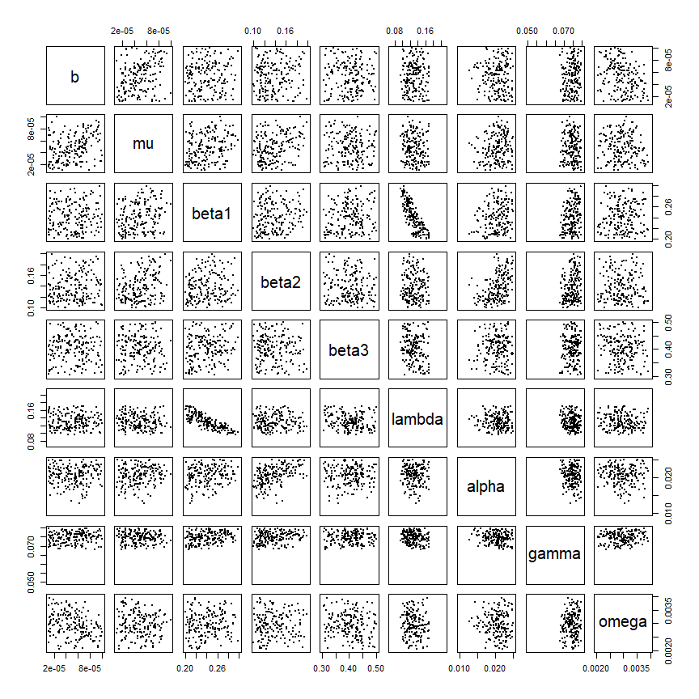
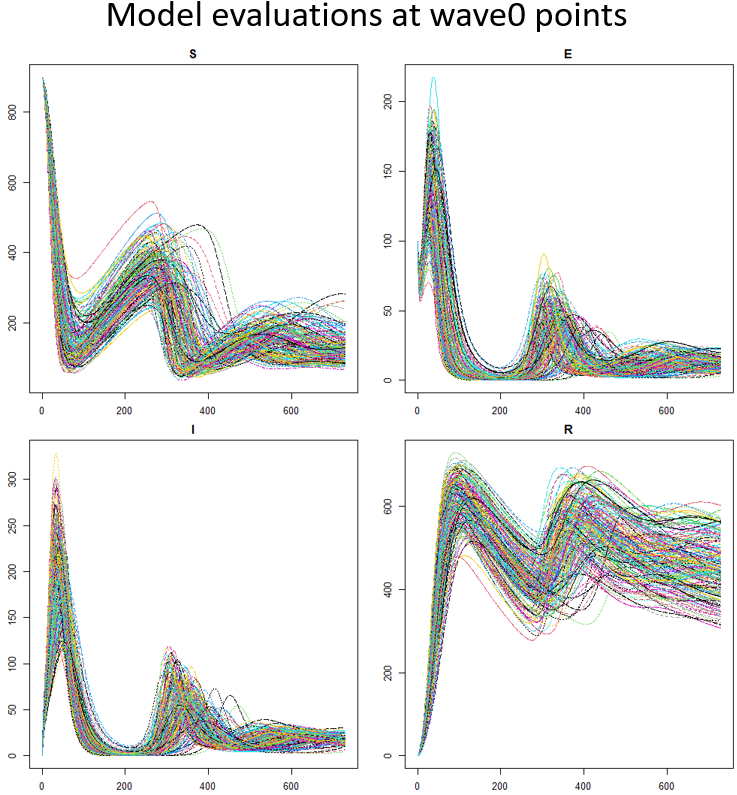

7 Proposing new points
In this section we generate the set of points that will be used to train the second wave of emulators. Through visualisations offered by hmer, we then explore these points and assess how much of the initial input space has been removed by the first wave of emulators.
The function generate_new_runs is designed to generate new sets of parameters; its default behaviour is as follows.
STEP 1. If prior parameter sets are provided, step 1 is skipped, otherwise a set is generated using a Latin Hypercube Design, rejecting implausible parameter sets. Figure 7.1 shows an example of LH sampling (not for our model), with implausible parameter sets in red and non-implausible ones in blue:
Figure 7.1: LH sampling
STEP 2. Pairs of parameter sets are selected at random and more sets are sampled from lines connecting them, with particular importance given to those that are close to the non-implausible boundary. Figure 7.2 shows line sampling on top of the previously shown LH sampling: non-implausible parameter sets provided by LH sampling are in grey, parameter sets proposed by line sampling are in red if implausbile and in blue if non-implausible.
Figure 7.2: Line sampling
STEP 3. Using these as seeding points, more parameter sets are generated using importance sampling to attempt to fully cover the non-implausible region. Figure 7.3 has non-implausible parameter sets provided by LH and line sampling in grey and non-implausibile parameter sets found by importance sampling in blue.
Figure 7.3: Importance sampling
The combination of the three steps above brings to the following final design of non-implausible parameter sets:

Figure 7.4: Overall design of new non-implausible parameter sets
Let us generate \(180\) new sets of parameters, using the emulators for the time up to \(t=200\). Focusing on early time outputs can be useful when performing the first waves of history matching, since the behaviour of the epidemic at later times for later times will depend on the behaviour at earlier times. Note that the generation of new points might require a few minutes.
restricted_ems <- ems_wave1[c(1,2,3,4,7,8,9,10)]
new_points_restricted <- generate_new_runs(restricted_ems, 180, targets, verbose=TRUE)## Proposing from LHS...
## 73 initial valid points generated for I=3
## Performing line sampling...
## Line sampling generated 40 more points.
## Performing importance sampling...
## Importance sampling generated 96 more points.
## Resample 1
## Performing line sampling...
## Line sampling generated 40 more points.
## Performing importance sampling...
## Importance sampling generated 72 more points.
## Selecting final points using maximin criterion...Note that, depending on the complexity of the calibration task, Latin Hypercube may not be able to find any parameter sets with implausibility below three. If that happens, generate_new_runs will perform step 1 (Latin Hypercube sampling) at a higher implausbility threshold, to find a space-filling design. Using this as a starting point, step 2 (line sampling) and step 3 (importance sampling) are then performed. From this proposal, a subset of lower-implausibility parameter sets are selected and steps 2 and 3 are repeated. This process iterates until either the desired implausibility has been reached or the process has reached a barrier to further reductions in implausibility.
We now plot new_points_restricted through plot_wrap. Note that we pass ranges too to plot_wrap to ensure that
the plot shows the entire range for each parameter: this allows us to see how the new set of parameters compares with respect to the original input space.
plot_wrap(new_points_restricted, ranges)
By looking at the plot we can learn a lot about the non-implausible space. For example, it seems clear that low values of \(\gamma\) cannot produce a match (cf. penultimate column). We can also deduce relationships between parameters: \(\beta_1\) and \(\lambda\) are an example of negatively-correlated parameters. If \(\beta_1\) is large then \(\lambda\) needs to be small, and vice versa.
Now that we have generated a new set of points, we can compare the model output at points in initial_points

with the model output at points in new_points_restricted

We can clearly see that the range of possible results obtained when evaluating the model at wave0 points is larger than the range obtained when evaluating the model at points in new_points_restricted. This is because we have performed a wave of the history matching process, discarding part of the initial input space that is not compatible with the targets. In the R-script, a function plot_runs is defined to produce plots as above. For example, to plot runs from the initial points, you can type plot_runs(initial_points). Note that this functions require the dataframe to have exactly \(180\) points.
In order to quantify how much of the input space is removed by a given set of emulators, we can use the function space_removed, which takes a list of emulators and a list of targets we want to match to. The output is a plot that shows the percentage of space that is removed by the emulators as a function of the implausibility cut-off. Note that here we also set the argument ppd, which determines the number of points per input dimension to sample at. In this workshop we have \(9\) parameters, so a ppd of \(3\) means that space_removed will test the emulators on \(3^9\) sets of parameters.
space_removed(ems_wave1, targets, ppd=3) + geom_vline(xintercept = 3, lty = 2) +
geom_text(aes(x=3, label="x = 3",y=0.33), colour="black",
angle=90, vjust = 1.2, text=element_text(size=11))## Warning: Ignoring unknown parameters: textBy default the plot shows the percentage of space that is deemed implausible both when the observational errors are exactly the ones in targets and when the observational errors are \(80\%\) (resp. \(90\%\), \(110\%\) and \(120\%\)) of the values in targets. Here we see that with an implausibility cut-off of \(3\), the percentage of space removed is around \(98\%\), when the observational errors are \(100\%\) of the values in targets. With the same implausibility cut-off of \(3\), the percentage of space removed goes down to \(97\%\), when the observational errors are \(120\%\) of the values in targets and it goes up to \(99\%\) when the observational errors are \(80\%\) of the values in targets. If instead we use an implausibility cut-off of \(5\), we would discard around \(88\%\) (resp. \(84\%\)) of the space when the observational errors are \(100\%\) of the values in targets (resp. when the observational errors are \(120\%\) of the values in targets). As expected, larger observational errors and larger implausibility cut-offs correspond to lower percentages of space removed.